L'agence no-code des organisations ambitieuses
Notre agence no-code vous accompagne dans la création d'outils sur mesure pour améliorer l'efficacité opérationnelle de vos équipes.

+150 projets no-code accompagnés depuis 3 ans
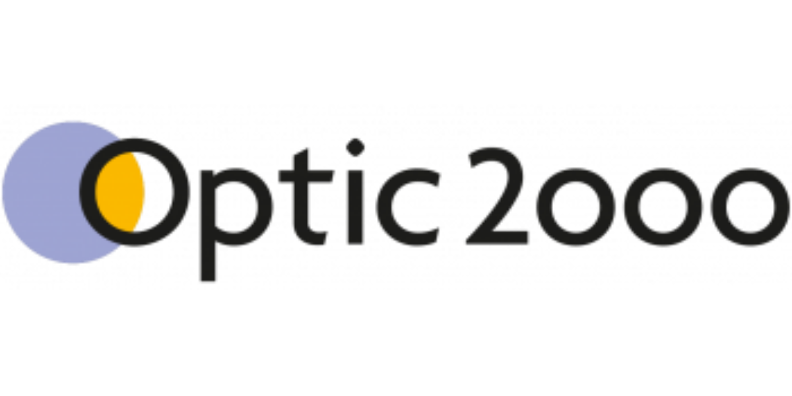
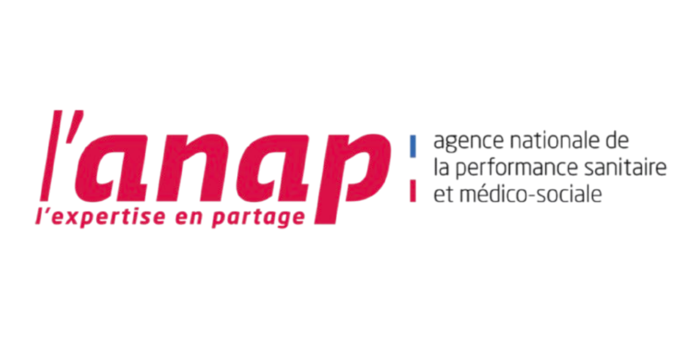
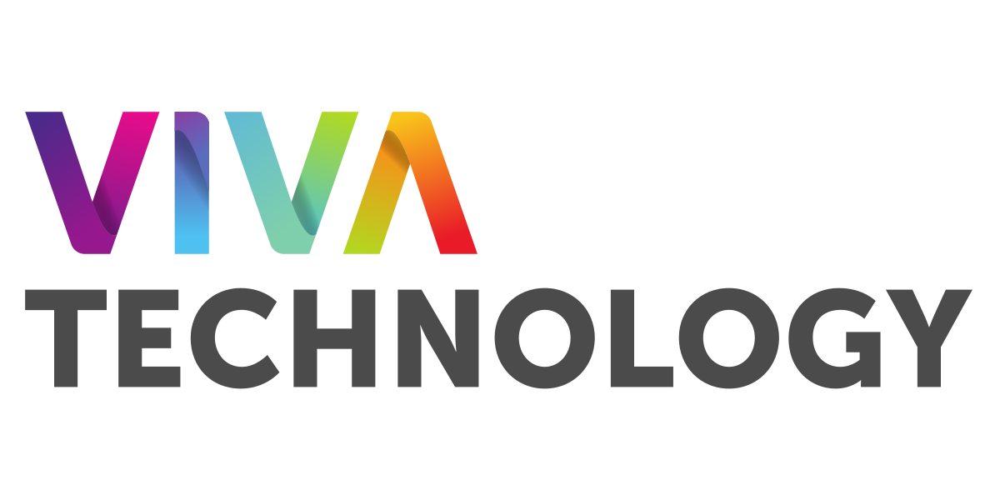
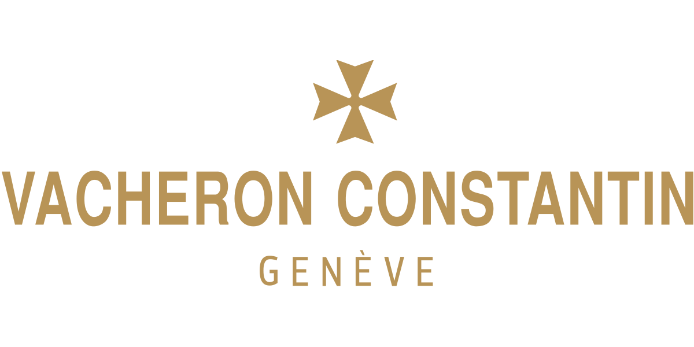
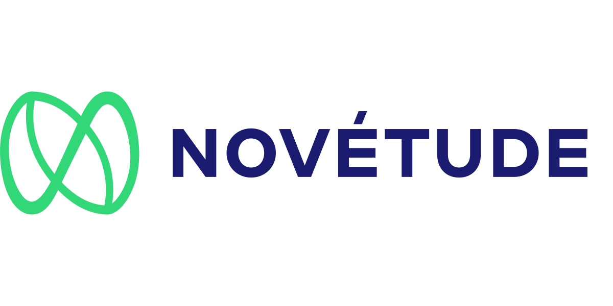
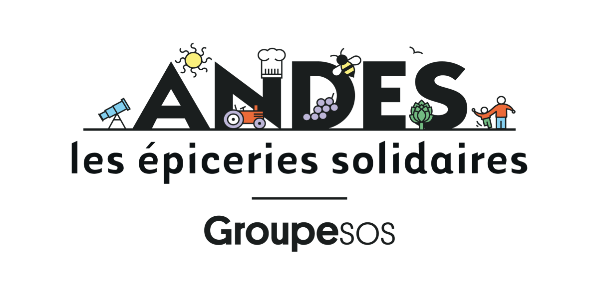
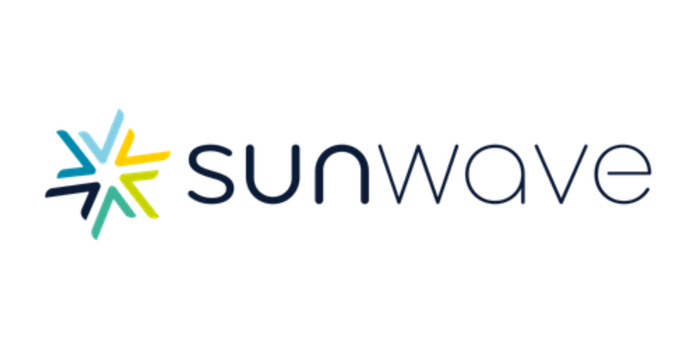
Vision
Notre agence no-code
Vous aussi vous rangez des carrés dans des ronds ?
Votre temps est précieux, ne l'éparpillez pas dans des tâches à faible valeur ajoutées. Notre agence no-code, avec nos consultants et les outils, vous permettra de récupérer ce temps tout en soulageant votre quotidien et celui de vos équipes.

Audit de vos processus
et de vos outils
Nos consultants no-code vous aident à avoir une vision claire de votre organisation.
Création de vos logiciels
sur-mesure
Nos experts no-code construisent vos solutions à partir des outils adaptés à votre organisation.
Maintenance et évolution
de votre SI
La mission de notre agence no-code ne s'arrête pas là :
nous vous accompagnons dans la maintenance de votre Système d'Information.
Concrètement, ce que nous pouvons faire ensemble.
ERP, CRM et ATS
Nous construisons l'outil de gestion de votre organisation.
Quelles que soient vos données, nous saurons les faire parler.
Portail client
En 2025, si vous avez des clients (c'est mieux), vous devez avoir un portail client. Nous pouvons le construire ensemble.
Génération de documents (GED) et e-signature
Ouvrir Word, sélectionner un template, copier - coller des valeurs, apposer une signature en image : ces pratiques sont révolues. Optez pour la génération automatiquement de vos documents et la e-signature.
Automatisation
Vos outils doivent parler entre eux (grâce à la langue des API). Confiez-nous vos automatisations, vous nous remercierez plus tard.
Facturation & Paiement
Nous automatisons votre facturation et déployons des formulaires de paiement efficaces.
Application métier
Nous déployons des applications et interfaces pour vos équipes sur le terrain pour optimiser la collecte et remontée d'informations.
Outils
Notre sélection d’outils no-code et low-code
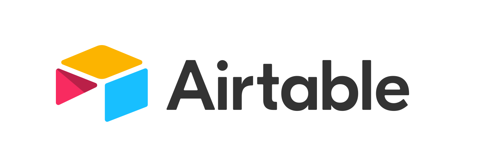

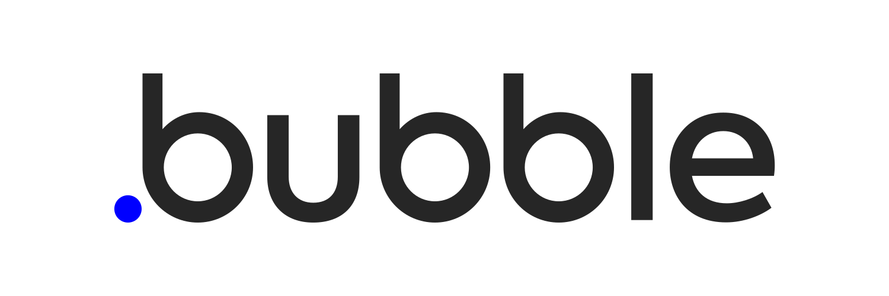
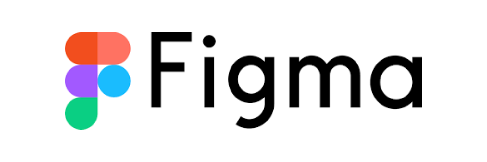
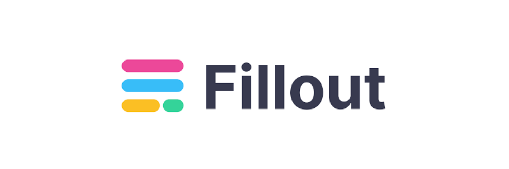
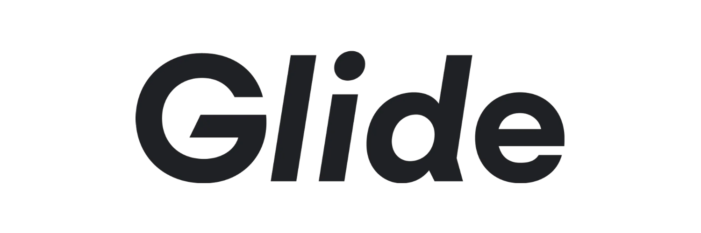
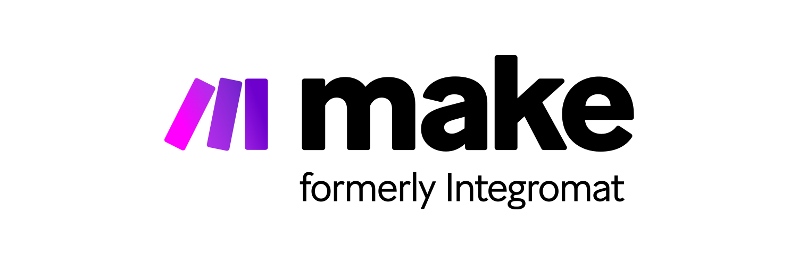
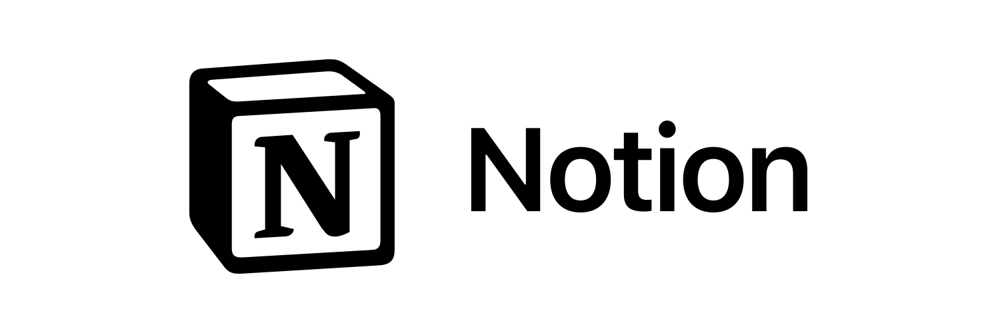
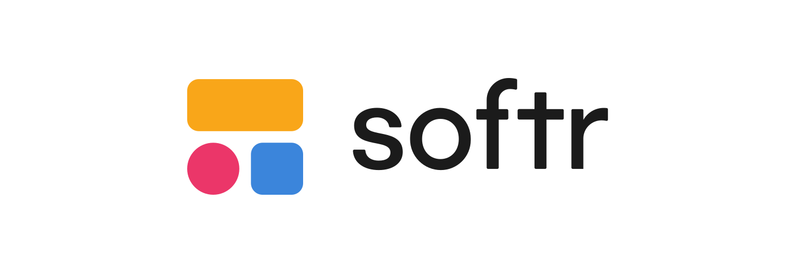
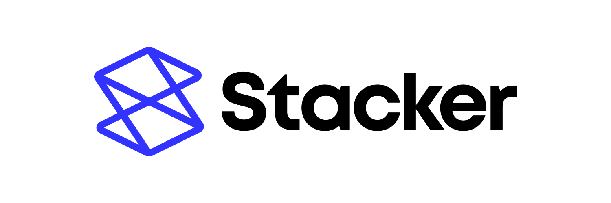
nos partenaires
nos outils favoris et certifiés
Intégrations
Intégrations API que nous maîtrisons


Blog
Nos connaissances de l'univers no-code
The most insightful stories about No Code

Read stories about No Code on Medium. Discover smart, unique perspectives on No Code and the topics that matter ...
The most insightful stories about No Code
Read stories about No Code on Medium. Discover smart, unique perspectives on No Code and the topics that matter ...
The most insightful stories about No Code
Read stories about No Code on Medium. Discover smart, unique perspectives on No Code and the topics that matter ...


Prêt à passer au no-code ?
Rejoignez les 150 organisations qui ont déjà fait confiance à notre agence no-code.


FAQ